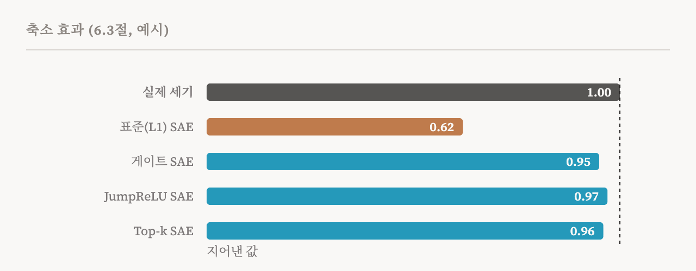
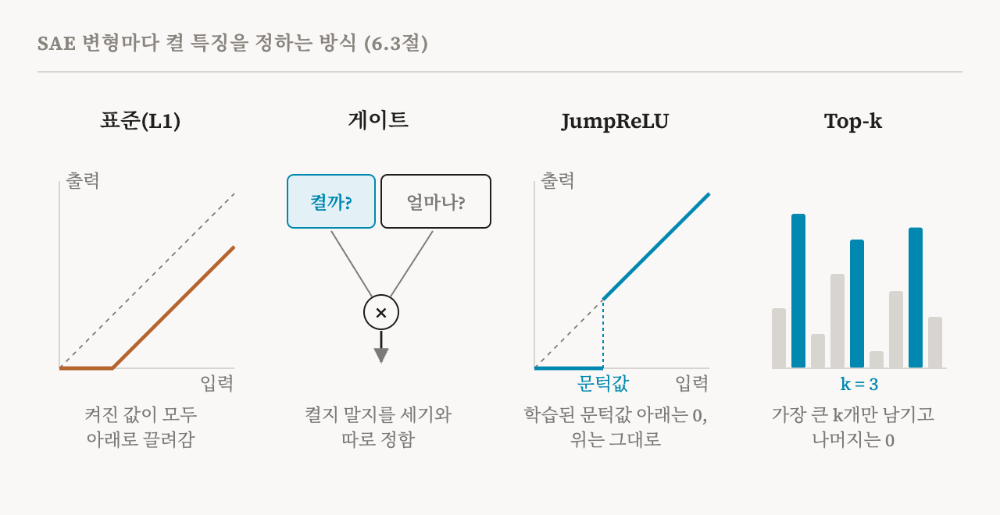

10편은 표준 희소 오토인코더를 소개했습니다. 활성값을 몇 개의 켜진 특징으로 바꾸는 인코더, 그것을 다시 짓는 디코더, 그리고 특징을 희소하게 유지하는 L1 벌점입니다. 이번 편은 이 책의 6.3절과 6.4절(34–37쪽)을 다룹니다. 이 두 절은 이 설계를 개선한 주요 방법들을 설명한 다음, 언제 어떤 버전을 쓸지 실용적인 조언을 줍니다. 조언 자체도 쓸모 있지만, 그 가운데 확정된 것이 얼마나 적은지 솔직히 밝힌다는 점도 쓸모 있습니다.
축소 문제
이 책은 표준 SAE를 넘어서야 하는 주된 이유를 하나 꼽습니다. L1 벌점은 켜진 모든 특징의 크기에 비용을 매깁니다. 필요 없는 특징을 0으로 미는 방법이 바로 이것이지만, 켜져 있어야 할 특징에도 똑같이 비용을 매깁니다. 그래서 SAE는 학습하는 동안 모든 특징을 실제보다 약하게 보고하도록 배웁니다. 값이 작을수록 비용이 적기 때문입니다. 특징이 분명히 있는데도 낮은 활성값으로 보고될 수 있습니다. 이를 축소 효과(shrinkage effect)라고 부릅니다.

축소가 문제인 것은 해석 가능성 연구가 이 숫자들에 기대기 때문입니다. 특징의 세기가 체계적으로 낮게 잡히면, 재구성도, 특징이 얼마나 강하게 켜졌는지에서 끌어낸 결론도 어긋납니다. 아래의 변형들은 저마다 다른 방식으로 이 문제를 공략합니다.
게이트 SAE
게이트 SAE(gated SAE)의 아이디어는, 표준 SAE가 한꺼번에 내리는 두 가지 결정을 떼어 놓는 것입니다. 특징을 켤지, 그리고 얼마나 셀지입니다. 경로가 두 개 있습니다. 게이트 경로는 특징마다 켤지 끌지를 정합니다. 크기 경로는 각 특징이 얼마나 센지를 추정합니다. 출력은 크기 경로의 값에 게이트가 정한 0이나 1을 곱한 것입니다. 희소성을 이끄는 벌점이 보고되는 세기에 직접 걸리지 않고 켤지 말지의 결정에 걸리므로, 크기가 더 이상 아래로 끌려가지 않습니다.
JumpReLU SAE
JumpReLU SAE는 특징마다 학습된 문턱값을 따로 둡니다. 어떤 특징에 대한 인코더의 값이 문턱값보다 크면 그 값을 그대로 통과시키고, 작으면 그 특징을 0으로 만듭니다. 곡선으로 나타내면 활성값이 0에서 문턱값으로 곧장 뛰어오르기 때문에 이런 이름이 붙었습니다.
기술적인 어려움이 하나 있습니다. 껑충 뛰는 지점에는 쓸모 있는 기울기가 없어서, 보통의 경사 하강법으로는 문턱값을 어디에 둘지 배울 수 없습니다. JumpReLU SAE는 직통 추정기(straight-through estimator)로 이를 피해 갑니다. 학습하는 동안 근사한 기울기를 대신 써서 학습이 이어지게 하는 표준적인 기법입니다.
Top-k SAE와 배치 Top-k SAE
Top-k SAE는 가장 단순한 길을 택합니다. 입력마다 인코더 값이 가장 큰 특징 k개만 남기고 나머지는 모두 0으로 만듭니다. 그러면 켜진 특징의 수는 결코 k를 넘지 않습니다. 개수를 장려하는 벌점이 아니라 개수에 대한 직접적인 제한입니다. 그리고 크기에 비용을 매기는 것이 없으므로 축소도 없습니다.
배치 Top-k SAE(batch Top-k SAE)는 이 제한을 느슨하게 합니다. 모든 입력에서 정확히 k개를 켜는 대신, 입력 한 묶음 전체에서 가장 큰 값들을 남겨 평균적으로 입력마다 k개가 되게 합니다. 그러면 복잡한 입력은 특징을 더 많이, 단순한 입력은 더 적게 쓸 수 있어서, SAE가 필요한 곳에 용량을 쓸 수 있습니다. 학습이 끝나고 실제로 쓸 때는 묶음 단위 규칙을 쓰면 한 입력의 특징이 같은 묶음의 다른 입력에 따라 달라지므로, 학습 중에 추정한 JumpReLU 방식의 문턱값으로 바꿔 씁니다.

장단점
이 책은 차이를 작은 표로 정리하고, 아래 표는 그것을 따릅니다. 어떤 상황에서든 가장 좋은 변형은 없습니다.
| 변형 | 희소성을 강제하는 방식 | 조정해야 할 것 |
|---|---|---|
| 표준(L1) | 활성값 크기에 거는 부드러운 벌점 | 벌점의 세기 λ |
| 게이트 | 세기와 따로 학습하는 켜기/끄기 결정 | λ. 게이트는 보조 손실로 학습 |
| JumpReLU | 특징마다 학습하는 문턱값 | λ, 학습 기법의 설정값, 문턱값의 초기값 |
| Top-k | 가장 큰 k개만 정확히 남김 | k |
| 배치 Top-k | 묶음 전체에서 입력당 평균 k개를 남김 | k |
이 책은 미리 학습된 SAE도 소개합니다. 연구자들은 여러 공개 모델에 대해 학습된 SAE를 공개했습니다. Gemma 2 모델용 Gemma Scope, Llama-3.1-8B용 Llama Scope가 그 예이고, 이것들은 Neuronpedia 같은 공개 플랫폼에서 둘러볼 수 있습니다. Neuronpedia에는 특징마다 그 특징이 켜지는 텍스트를 보여 주는 페이지가 있습니다.
변형 고르기
6.4절은 어떤 SAE를 쓸지라는 실용적인 질문으로 넘어가, 네 가지 요인을 중심으로 답을 정리합니다.
첫째는 분석의 목표입니다. 애초에 어떤 특징이 있는지 묻는 탐색적 발견이 SAE가 설계된 목적입니다. 이미 찾아낸 행동을 표적으로 조사하는 경우처럼 관심 있는 개념이 미리 정해져 있다면, 선형 프로브나 분산 정렬 탐색(distributed alignment search)이라는 방법 같은 지도 학습 방법이 더 직접적인 도구입니다(14편에서 비교합니다). 배포된 모델을 감시하는 경우에는 실행 비용이 적은, 작은 사전을 가진 SAE가 나을 수 있습니다.
둘째는 SAE를 모델의 어디에 붙이는가입니다. 잔차 스트림에는 보통의 단일 층 SAE를 바로 쓸 수 있습니다. MLP 출력에는 이 책이 트랜스코더를 권합니다. 트랜스코더는 고정된 활성값이 아니라 MLP의 입력에서 출력으로 가는 사상을 학습합니다(13편). 어텐션 출력에는 표준 SAE와 게이트 SAE가 모두 쓰였지만, 세 자리 가운데 가장 덜 연구된 곳입니다. 여러 층에 걸친 분석에는 크로스코더와 층간 트랜스코더가 있지만, 비용이 훨씬 큽니다.
| 자리 | 쓰인 변형 | 보고된 근거 | 보고된 단서 |
|---|---|---|---|
| 잔차 스트림, 앞쪽 층 | 게이트, Top-k | 입력 임베딩에 가깝고 희소성이 중간 정도 | 작은 확장 계수(2–4배)가 보고됨 |
| 잔차 스트림, 가운데 층 | 게이트, JumpReLU | 특징 구조가 가장 풍부하고 해석 전망이 가장 좋음 | 표준 확장 계수(4–8배). 가장 많이 연구된 설정 |
| 잔차 스트림, 뒤쪽 층 | Top-k, 게이트 | 점점 과제에 특화되고 덜 희소할 수 있음 | 큰 확장 계수(8–16배)가 보고됨 |
| MLP 출력 | 트랜스코더 | 한 층의 SAE로는 MLP의 비선형성을 가로지를 수 없음 | 고정된 활성값의 분해가 아님 |
| 어텐션 출력 | 게이트, 표준 | 어텐션 출력은 계수가 낮은 경우가 많음 | 가장 덜 연구됨. 작은 사전이 맞을 수 있음 |
| 여러 층에 걸쳐 | 크로스코더, 층간 트랜스코더 | 특징이 바뀌는 과정을 추적하고 층간 중첩을 풂 | 계산 비용이 크고 여러 층에서 학습해야 함 |
셋째는 모델의 크기입니다. Gemma-2-2B처럼 파라미터가 10억에서 20억 개쯤인 모델은 주로 규모를 키우기 전에 방법을 검증하는 데 쓰이고, 이 규모에서는 변형들의 차이가 어떤 지표를 쓰느냐에 크게 좌우됩니다. 파라미터가 10억에서 100억 개 사이인 모델에는 JumpReLU와 Top-k가 가장 흔히 쓰입니다. Gemma Scope는 앞의 것을, Llama Scope는 뒤의 것을 썼습니다. 100억 개가 넘는 모델에 대해서는 Gemma Scope와 Gemma Scope 2가 주된 공개 자료이며, 둘 다 JumpReLU로 만들었습니다. OpenAI 연구자들은 Top-k SAE를 GPT-4로까지 확장하기도 했지만, 그 모델은 공개되어 있지 않습니다.
넷째는 자원입니다. 계산 자원이 적거나 재구성의 완벽함보다 빠른 반복이 중요하다면 Top-k가 현실적인 선택입니다. 켜지는 특징의 수를 고정하면 찾아야 할 설정값에서 벌점의 세기가 빠지고, 보고된 k 값은 대개 32에서 150 사이입니다. 조정에 어느 정도 여력이 있다면, 게이트 SAE가 재구성과 희소성 사이의 균형을 더 잘 맞췄습니다. 조정에 여력이 많다면, JumpReLU SAE가 같은 희소성에서 가장 좋은 재구성을 보였습니다.
단서들
여기서 이 책은 유난히 솔직합니다. 2025년에 나온 SAEBench라는 벤치마크에 따르면, 표준적인 대리 지표인 재구성과 희소성 점수가 좋아진다고 해서 사람들이 실제로 관심 있는 과제의 성능이 믿을 만하게 좋아지지는 않습니다. 이제는 주로 기준선으로 쓰이는 표준 L1 SAE와의 비교는, 사전의 품질뿐 아니라 축소 효과까지 함께 재는 셈입니다. 그리고 가장 좋은 모델과 설정을 찾는 데 아주 많은 시간이 들 수 있습니다.
이 책은 이런 결과들이 얼마나 일반적인지를 제한하는 조건들도 표로 덧붙입니다.
| 조건 | 뜻 |
|---|---|
| 구조 | 증거 대부분이 Llama와 Gemma 모델에서 나왔고, 다른 계열은 시험되지 않음 |
| 과제 | 안전 감사, 행동 이해, 지식 위치 찾기에서 중요한 것이 다를 수 있지만, 평가는 이를 거의 나누지 않음 |
| 속도 | 기존 설계가 충분히 연구되고 재현되기 전에 새 설계가 나옴 |
| 이론 | 결과 대부분이 경험적이며, 어떤 변형이 왜 성공하거나 실패하는지 잘 이해되지 않음 |
| 재현성 | 무작위 시드만 달리해서 학습한 SAE들이 상당히 다른 특징을 찾을 수 있어서, 변형 사이의 작은 차이는 잡음일 수 있음 |
마지막 줄은 강조할 만합니다. 같은 변형을 두 번 학습했을 때의 차이가 서로 다른 두 변형의 차이보다 크다면, 보고된 우위를 설계 덕분이라고 할 수 없습니다. 이 책은 이를 제대로 고려한 비교가 거의 없다고 지적합니다. 그래서 이 결과들을 확립된 규칙이 아니라 참고 자료로 다루라고 권합니다.
| 용어 | 뜻 |
|---|---|
| 축소 효과 | L1 벌점 때문에 SAE가 특징을 실제보다 약하게 보고하는 경향 |
| 게이트 SAE | 특징을 켤지와 얼마나 셀지를 따로 정하는 경로가 있는 SAE |
| JumpReLU | 학습된 문턱값 아래에서는 0이고, 위에서는 값을 그대로 통과시키는 활성화 함수 |
| 직통 추정기 | 실제 기울기가 쓸모없는 곳에 근사한 기울기를 대신 쓰는 학습 기법 |
| Top-k SAE | 입력마다 가장 큰 특징 활성값 k개만 남기는 SAE |
| 배치 Top-k SAE | 묶음 전체에서 가장 큰 활성값을 남겨, 입력당 평균 k개가 되게 하는 SAE |
| 대리 지표 | 재기 쉽고, 정말 관심 있는 것을 따라가리라 기대하는 점수 |
| SAEBench | 희소 오토인코더를 여러 기준으로 비교하는 2025년의 벤치마크 |
| Gemma Scope, Llama Scope | 공개 모델에 대해 학습된 SAE를 모아 공개한 자료 |
| Neuronpedia | 특징과 그 특징을 켜는 텍스트를 둘러볼 수 있는 공개 웹사이트 |
12편에서는 희소 오토인코더가 실패하는 방식을 살펴봅니다. 죽은 특징, 중복된 특징, 흡수된 특징, 불안정한 특징, 그리고 SAE가 찾은 특징이 진짜 특징인가라는 더 깊은 질문입니다.